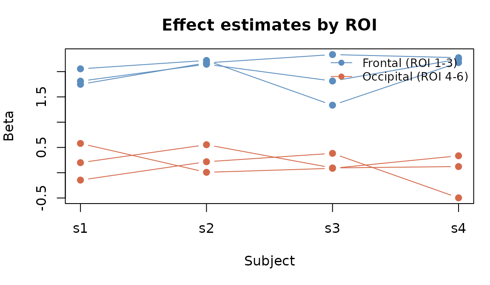
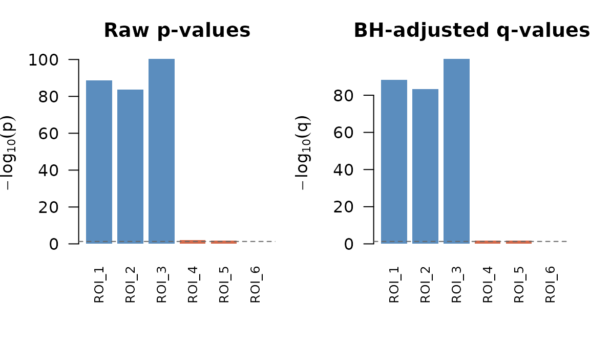
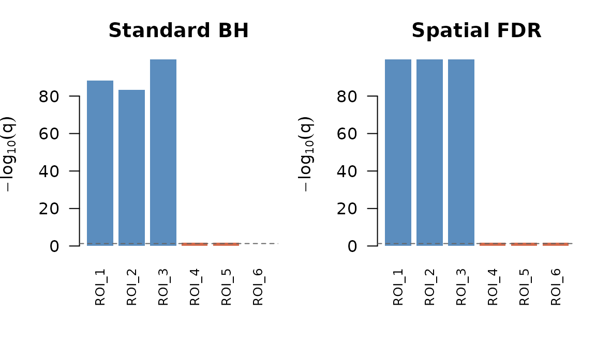

Post-hoc corrections and spatial FDR
Source:vignettes/as-plan-and-spatial-fdr.Rmd
as-plan-and-spatial-fdr.RmdWhen do you need this?
After running a group-level analysis, you typically have one p-value per spatial unit (voxel, parcel, or ROI). Testing thousands of locations simultaneously inflates false positives, so you need a multiple comparison correction. Standard FDR (Benjamini–Hochberg) treats every test independently. Spatial FDR goes further by grouping spatially related tests—for instance, voxels within the same parcel—and adjusting within and across groups to better control the false discovery rate in structured neuroimaging data.
This vignette shows how to apply both standard and spatial FDR corrections in fmrigds, including how to chain operations on realized GDS objects.
Sample data
We’ll use a small dataset with 6 ROIs, 4 subjects, and 1 contrast. ROIs 1–3 represent a “frontal” region with a genuine effect; ROIs 4–6 represent an “occipital” region with little activation.
g0 <- compute(gds(tmp))
explain(g0)
#> GDS
#> dims: 6 x 4 x 1 [sample x subject x contrast]
#> space: sample_labels n=6
#> subjects: 4 (s1, s2, s3, ...)
#> contrasts: 1 (c1)
#> assays: beta[location], var[variance]
Per-subject betas for 6 ROIs. ROIs 1–3 (frontal) have a true effect around 2; ROIs 4–6 (occipital) are near zero.
The frontal ROIs cluster around 2 while the occipital ROIs hover near zero, just as we designed. A group model should find the frontal effect significant and the occipital effect not.
Chaining operations on realized objects
All fmrigds verbs accept realized GDS objects, not just plans.
Internally, as_plan() wraps the in-memory data so you can
keep chaining without going back to disk:
# Reduce directly on a realized GDS
g_fe <- reduce(g0, method = "fixed") |> compute()
names(assays(g_fe))
#> [1] "beta" "var" "beta_g" "var_g" "se_g" "z_g" "p_g" "Q"
#> [9] "I2" "n_eff" "z" "p"
# Chain reduce and post-hoc in one pipeline
g_bh <- reduce(g0, method = "fixed") |>
posthoc("fdr:bh") |>
compute()
names(assays(g_bh))
#> [1] "beta" "var" "beta_g" "var_g" "se_g" "z_g" "p_g" "Q"
#> [9] "I2" "n_eff" "z" "p" "q"The group result now includes FDR-adjusted q-values alongside the standard meta-analytic outputs.
Standard FDR correction
Benjamini–Hochberg ("fdr:bh") controls the expected
proportion of false discoveries. It treats each sample location
independently:
assay(g_bh, "p")
#> , , 1
#>
#> [,1]
#> [1,] 2.231817e-89
#> [2,] 1.789244e-84
#> [3,] 5.094693e-101
#> [4,] 1.165240e-02
#> [5,] 1.530839e-02
#> [6,] 9.143923e-01
assay(g_bh, "q")
#> , , 1
#>
#> [,1]
#> [1,] 6.695452e-89
#> [2,] 3.578487e-84
#> [3,] 3.056816e-100
#> [4,] 1.747859e-02
#> [5,] 1.837006e-02
#> [6,] 9.143923e-01
Raw p-values (left) and FDR-adjusted q-values (right). The dashed line marks 0.05.
ROIs with strong effects (frontal, blue bars) remain significant after correction—their bars extend well above the 0.05 threshold (dashed line). The occipital ROIs (orange) have much weaker evidence and fall below the threshold after adjustment.
Spatial FDR
When your samples have spatial structure—parcels belonging to brain
regions, or voxels within an atlas—"fdr:spatial" can
exploit that grouping for a more powerful correction. The algorithm:
- Aggregates p-values within each group using Simes’ method
- Applies weighted Benjamini–Hochberg across groups (weights proportional to group size)
- Broadcasts the group-level q-values back to individual samples
You supply the grouping via options$group, a vector with
one entry per sample. Here we assign ROIs 1–3 to region 1 (“frontal”)
and ROIs 4–6 to region 2 (“occipital”):
region <- c(1, 1, 1, 2, 2, 2)
g_sfdr <- posthoc(g_fe, method = "fdr:spatial",
options = list(group = region)) |>
compute()
assay(g_sfdr, "q")
#> , , 1
#>
#> [,1]
#> [1,] 3.056816e-100
#> [2,] 3.056816e-100
#> [3,] 3.056816e-100
#> [4,] 2.296258e-02
#> [5,] 2.296258e-02
#> [6,] 2.296258e-02Samples within the same region share a group-level q-value. This is useful when you expect effects to cluster spatially—as they typically do in neuroimaging.

Standard BH correction (left) versus spatial FDR (right). Spatial FDR assigns a single q-value per region.
Notice that within each region, the spatial FDR q-values are identical—the algorithm operates on groups, not individual tests. Spatial FDR can be more powerful than standard BH when the spatial grouping reflects real biological structure, because combining evidence across neighbouring locations strengthens the signal.
Requirements for spatial FDR
- The GDS must contain
pvalues (orz/tfrom which p can be derived). Runningreduce()first produces these automatically. -
options$groupmust be a vector of length equal to the number of samples (the first dimension of the assay arrays). Values can be numeric, character, or factor.NAentries are excluded from grouping.
Next steps
-
vignette("fmrigds")— getting started with the core pipeline -
vignette("spatial-operations")— masking, alignment, and space transformations -
vignette("fmristore-ingestion")— reading fmristore HDF5 files -
?posthocfor the full list of correction methods